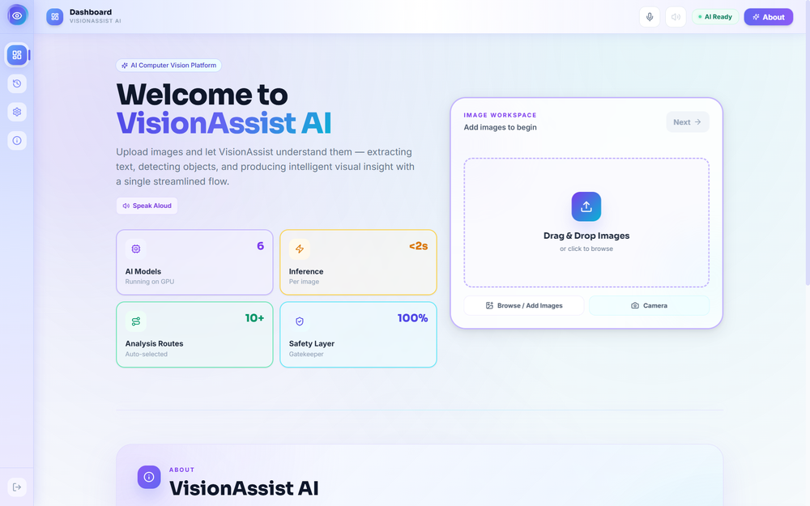
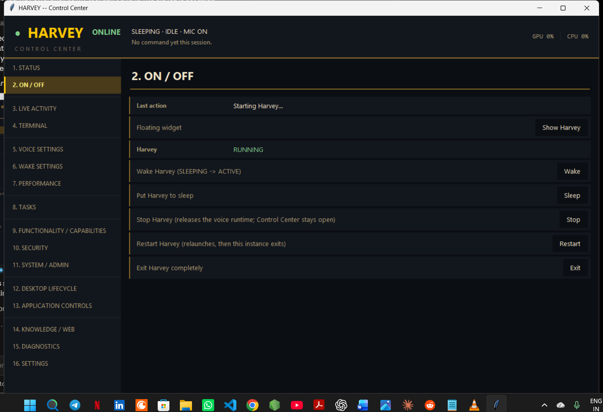
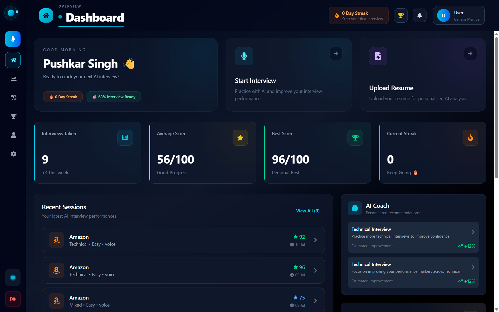

Machine Learning
- PyTorch
- Deep learning
- BiLSTM & attention
- Transformers
- Model evaluation
Data Scientist · Machine Learning Engineer
Building machine learning systems that run in the real world.
B.Tech, Computer Science & Data Science · Galgotias College of Engineering & Technology · Class of 2027
I build end-to-end machine learning systems — from choosing and training models to GPU-aware serving and the interface people actually use. My work spans computer vision, speech and LLM applications, shipped as working software rather than notebooks.
Open to Data Science, ML Engineering and Applied AI roles — internships now, full-time from 2027.
About me
I'm a final-year B.Tech student in Computer Science & Data Science who enjoys taking a machine learning idea all the way to a product someone can use. I like the whole path — cleaning data, training and evaluating models, making them fast on real hardware, and designing the screen a person finally sees.
My interests sit where computer vision, speech and language models meet. I'm aiming for a career in Data Science and Applied AI, where I can own ML work from data to deployment.
Education
Galgotias College of Engineering & Technology
2023 — 2027 · Final (fourth) year
Relevant coursework
Career interests & alongside the degree
Skills
Projects
Multi-model computer vision platform that sees, reads and speaks.
Routes every image through a trained gatekeeper model to the right specialist — OCR with a custom BiLSTM classifier, a vision-language model or object detection — then fuses the results into one spoken answer. GPU-served on Cloud Run.
Private repository · walkthrough available on request

Vision tools are usually single-purpose — a scanner only reads text, a detector only draws boxes. A user who doesn't know what kind of image they have must pick the right tool first, which is a real barrier for visually impaired or hands-busy users.
Local-first personal AI agent for Windows, controlled by voice.
A fully on-device voice assistant: wake word, speech recognition, speaker verification and a local LLM, with every action passing through a deterministic planner and security gate. 63k+ lines of Python, 3,700+ tests.
Private repository · walkthrough available on request

Cloud assistants send everything off-device and often let the language model act directly on the system — slow, private-data-hungry and hard to trust with real actions on a personal computer.
LLM-powered interview practice with structured performance scoring.
Generates company- and level-specific interview questions with Gemini, scores voice or text answers against a structured rubric, and tracks readiness over time on a personal dashboard.

Candidates rarely get realistic interview practice with specific, measurable feedback — generic question banks don't adapt to the company, role or level they are preparing for.
Contact
I'm looking for roles where I can own ML work from data to deployment. If you're hiring for data science or applied AI, I'd be glad to walk you through any of these projects.